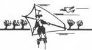

Skånes Isseglarklubb - SIK |  |
| Isinformation | Skridskosegling | Långfärdsskridsko | Sommaraktiviteter | Om SIK | Vanliga frågor | Kontakt | |
Övernattningstur med Sven Karlsson i dagarna tre INSTÄLLD KOMMANDE HELG MEN MED FÖRHOPPNINGEN ATT KUNNA GENOMFÖRAS 17 - 20 MARS.Känner du för att ägna dig åt att åka skridskor i dagarna tre för då har du chansen nu. Vi söker upp den finaste isen i ett större åkområde var den nu kan finnas och har vi tur upprepar sig det fina väder vi hade i fjor men nu på en ny plats. Turlängd allt efter egen smak och ledare finns för grupp III och IV. Vi planerar att genomföra övernattningsturen den 17 - 20 mars. Avresa sker på torsdagen den 17 mars på eftermiddagen. Du har möjlighet att ansluta på fredagskvällen. Hemkomst på söndagen den 20 mars. Öppet för alla sikare grupp V-II men vana krävs eftersom vi står på is hela dagen. Boendet sker på vandrarhem eller liknande. Mat ordnas på plats. Jag vill ha en definitiv anmälan senast måndagen den 14 mars. Intresserad skickar ett mail till Sven Karlsson. Hälsningar Sven Karlsson. |